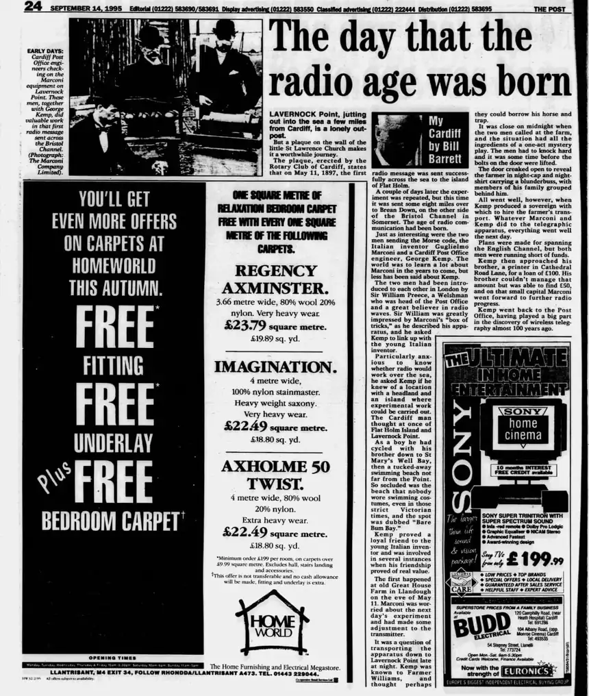

EV-0646 — The Post (Cardiff), 14 September 1995, p.24: Bill Barrett, “My Cardiff”, “The day that the radio age was born” (Marconi and George Kemp at Great House Farm, 10–11 May 1897)
Catalogue record
| EV ID | EV-0646 |
|---|---|
| Title | The Post (Cardiff), 14 September 1995, p.24: Bill Barrett, “My Cardiff”, “The day that the radio age was born” (Marconi and George Kemp at Great House Farm, 10–11 May 1897) |
| Date of document | 14 September 1995 |
| Event dated | The eve of 11 May 1897 (night of 10–11 May 1897) |
| Type | newspaper article (published local history column) |
| Source / publisher | The Post (Cardiff), 14 September 1995, page 24; column “My Cardiff” by Bill Barrett |
| Reference | The Post (Cardiff), 14 Sep 1995, p.24 |
| Evidence label | PUBLISHED SOURCE (NEWSPAPER) |
| Status | HELD (copy of the printed page); transcript below |
Summary
On the eve of 11 May 1897, the night before the first wireless message crossed the Bristol Channel from Lavernock Point to Flat Holm, Guglielmo Marconi and the Cardiff Post Office engineer George Kemp called at Great House Farm, Llandough, close on midnight. Farmer Williams of Great House Farm (John Williams Sr, died 1908) lent them his horse and trap to carry the apparatus to Lavernock Point, and the experiment succeeded the next day.
Image

Reproduced at reduced size for research use.
Transcript
The Post (Cardiff), 14 September 1995, p.24, “My Cardiff” by Bill Barrett, “The day that the radio age was born”. The passage on Great House Farm, spelling as printed.
The first happened at old Great House Farm in Llandough on the eve of May 11. Marconi was worried about the next day's experiment and had made some adjustment to the transmitter.
It was a question of transporting the apparatus down to Lavernock Point late at night. Kemp was known to Farmer Williams, and thought perhaps they could borrow his horse and trap.
It was close on midnight when the two men called at the farm, and the situation had all the ingredients of a one-act mystery play. The men had to knock hard and it was some time before the bolts on the door were lifted.
The door creaked open to reveal the farmer in night-cap and night-shirt carrying a blunderbuss, with members of his family grouped behind him.
All went well, however, when Kemp produced a sovereign with which to hire the farmer's transport. Whatever Marconi and Kemp did to the telegraphic apparatus, everything went well the next day.
Context in the column: the column opens with the Rotary Club of Cardiff plaque at St Lawrence Church, Lavernock, which records that on 11 May 1897 the first radio message was sent across the sea to Flat Holm, and continues with Kemp’s part in the experiments. Photo caption on the page: “EARLY DAYS: Cardiff Post Office engineers checking on the Marconi equipment on Lavernock Point. These men, together with George Kemp, did valuable work in that first radio message sent across the Bristol Channel. (Photograph: The Marconi Company Limited).”
Destination
- Where the original is held: The Post (Cardiff), 14 September 1995, page 24 (newspaper; library newspaper holdings). A copy of the printed page is held with the research papers.
- On this site: this artifact page, listed in the Evidence Register, and cited from the Master Timeline (10–11 May 1897).
Interpretation
A published Cardiff newspaper column placing Marconi and George Kemp at Great House Farm on the eve of the 11 May 1897 Lavernock Point–Flat Holm experiment, with Farmer Williams’s horse and trap carrying the apparatus to Lavernock Point. It stands beside The Glamorgan Village Book (1993), which records that Marconi slept at Great House Farm in a four-poster bed while working on his experiments in wireless telegraphy between Flat Holm and Lavernock Point (EV-0645; EV-0085).
Related records
- Related record: EV-0645 — The Glamorgan Village Book (1993), “Llandough (Penarth)”
- Related record: EV-0085 — The Glamorgan Village Book, page on Great House Farm (GHF-E110-A6)
- Related record: EV-0011 — Evening Express, 15 May 1897, p.4
- Related record: EV-0248 — Marconi in Wales, May 1897: contemporary press
- Related record: EV-0256 — George Kemp’s diary, May 1897